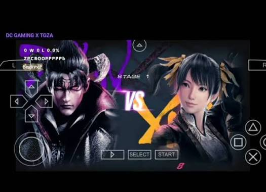
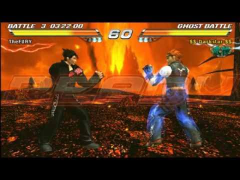
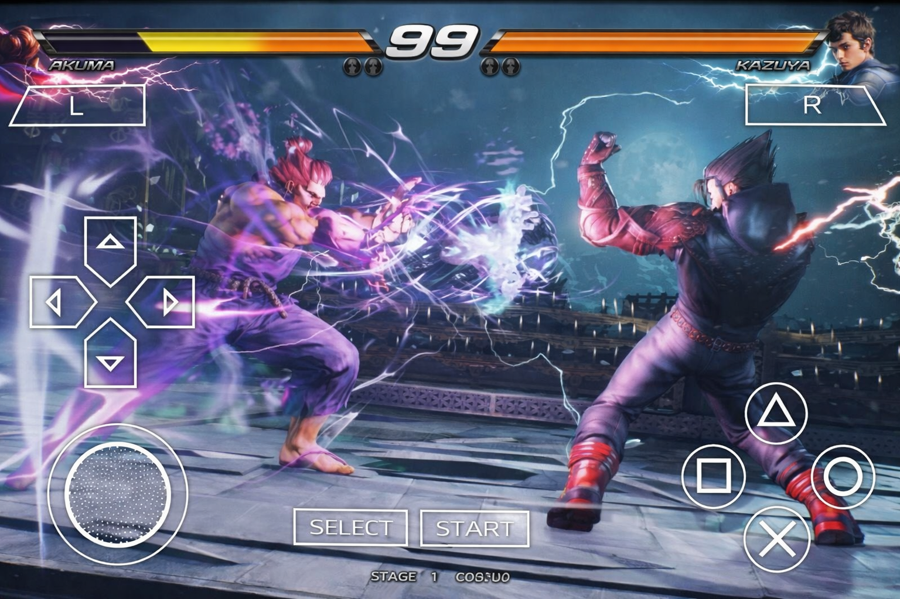
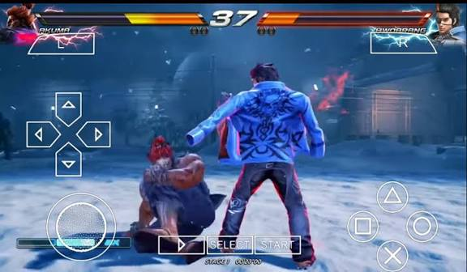
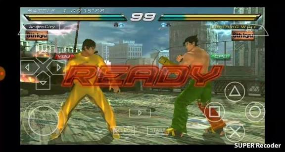

Best PSP Games for PPSSPP Emulator
Best PSP Games for PPSSPP Emulator

Tekken 7 PPSSPP – PSP (Download for Android) is one of the most complete and popular fighting games available for the PSP platform. Often considered by fans as a premier edition of the legendary King of Iron Fist Tournament, this version runs excellently on the PPSSPP emulator for Android, offering intense action, high-quality graphics, and extremely refined gameplay.

The title features a massive roster of fighters, each equipped with their own martial arts styles, deadly techniques, exclusive combos, and special moves. Iconic characters such as Jin Kazama, Kazuya Mishima, Heihachi, Paul Phoenix, Law, and King are all present, ensuring a wide variety of combat styles to master.

The combat system is deep and technical, allowing players to execute rapid combinations, precise counters, and devastating strikes. This version also highlights dynamic and strategic mechanics that make battles exciting for both beginners and veteran fighting game players.

Beyond the classic Arcade mode, the game includes additional challenges and multiplayer options via Ad-Hoc, allowing you to face off against friends in intense bouts. The graphics are stunning for a PSP title, featuring smooth animations and highly detailed stages.

Running flawlessly on PPSSPP – PSP, Tekken is a must-have for fighting game enthusiasts, delivering a complete, competitive, and thrilling experience from the Tekken universe directly to your mobile device.
GTA SAN ANDREIAS FOR ANDROID FULL APK